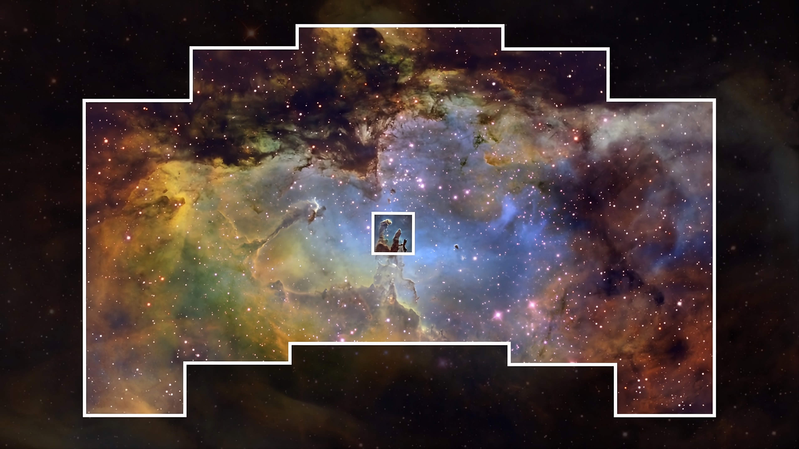
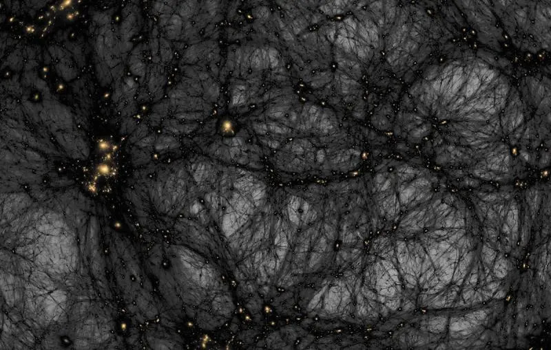
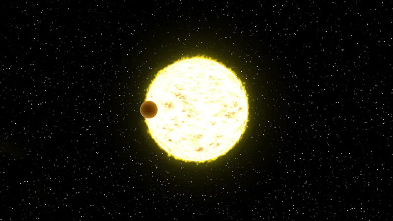

The Nancy Grace Roman Space Telescope is… insane (to say the least). It has so much technology that it runs laps around the Hubble and James Webb Space Telescopes. This blog will go into the three main reasons why Roman is groundbreaking.
To start, Roman has a 100 to 200 times larger field of view than Hubble. What does that mean? Well, it can capture panoramic, wide-angle shots of the cosmos with the same razor-sharp resolution as Hubble. With these enormous images, mapping the sky will be much faster. How much faster? Combined with Roman’s quicker slew and reset rate, it will be able to survey roughly 1,000 times faster than Hubble. To put that in perspective, the amount of sky Roman can map in a month would take the Hubble a century. Below, you can see a comparison between the imaging size of Roman and Hubble. Let that sink in…

The main goal of Roman is to study Dark Matter and Energy. It is well equipped to do both, to say the least. By mapping hundreds of millions of galaxies and supernovae, scientists will be able to study the behavior and evolution of the universe. Scientists hope to find definitive clues about the expansion of the universe, which could lead to insight about what Dark Energy really is. Not Hubble nor JWST have the capabilities Roman has to help us answer General Relatives deepest questions.

Since Roman can survey hundreds of millions of stars at once, the amount of new exoplanet detections will skyrocket. However, as previously discussed on Galactic Bulletin, most exoplanet detections have occurred through the use of the radial velocity and transit methods. Roman’s massive field of view will also allow for more rogue planet detections. Rogue planets are incredibly difficult to detect, since they need to have a large object to pass in front of our view to detect them. That’s rare, but the more we can see, the less that probability is an issue. Roman also boasts a next-gen coronagraph instrument, that will allow for terrestrial exoplanet detection as well. Coronagraphs blocks the host-star’s light, allowing us to detect the exoplanets that are closer in orbit.

As we wait for Roman to make groundbreaking discoveries, stay curious and optical.